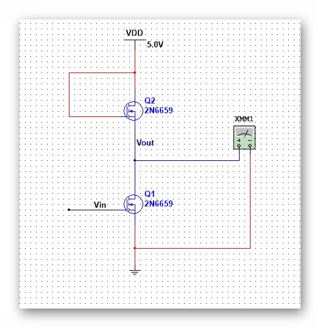

| 模拟集成电路 | |
目录： 一之MOS器件 二之单级放大器 三之差动放大器 四之电流镜偏置 五之共源电阻负载 六之共源二极管负载 七之共源电流源负载 八之共源电流反馈 九之线性区MOS负载 十之共源极负反馈负载 十一之源跟随器（共漏） 十二之共栅极 十三之共源共栅 十四之差动放大器 十五之电流镜 十六之偏置电路 十七之小技巧1 十八之小技巧2 返回页： 类似页：
|
二、采用二极管连接型器件作为负载的共源级：前面的实际电路画出了电路，这里就不再画电路了。主要是为了节省时间，记住三极管的各个端口就可以得到电路图的准确描述。 电路描述： 所谓的二极管连接型，就是将栅和漏相连，这样漏压与栅压相等。栅压为正导通，为负截止，类似二极管的性质。 电路性能推导： 由于Vgs=Vds， 等效电路在栅和漏之间连通。在小信号中这点等效于地，可以分裂成两个地，得到类似于共S的放大器。只不过这里的特性更加像电阻。 在正向导通时，电阻值为1/gm||ro||1/gmb,这是依次考虑本征增益，沟道调制效应，体效应。 体效应引入在一定的程度上降低阻抗。 ！这里有一个重要的方法：阻抗计算法 集成电路的描述中常用输入阻抗和输出阻抗来描述一个电路的端口的负载能力。计算这种能力的方法是怎样的呢？ 既然考虑的是负载能力，就可以假设加入一个电压源在测试端，求测试端的电流就可以得到端口空负载的阻抗，在一定的程度上可以反应电路结构的 阻抗的大小。依次为基础可以看到带电流或电压能力。
现在继续看使用二极管型负载的电路特性。 将前面的漏端负载换成二极管型负载。得到的等效电路的增益Av=-gm1*(1/(gm2+gmb2)),一个很容易理解的增益，就是将电阻值换成了二极管的正向阻值。 由于gm1和gm2的Ids是相等的（忽略其他之路上的电流，这是估算的基本法则），所以可以将gm展开为Ids的表达式以求化简。这个展开式做一个简单的 推导。（注意，这里的增益都是基于饱和区）。 Ids=1/2*u*Cox*W/L*(Vgs-Vth)^2, gm=u*Cox*W/L*(Vgs-Vth)=u*Cox*W/L*(2Ids/(u*Cox*W/L))^1/2=(2Ids*u*Cox*W/L)^1/2 展开后化简为Av=-（（W/L）1/(W/L)2）^1/2*(1/(1+gmb2/gm2)） 这时的增益在忽略gmb2/gm2的影响后，Av与输入电压Vg无关，所以这时的输入输出呈现线性关系。 使用大信号也可以推导出相同的结论。 这种线性增益在实际的电路中就可以等效为电流源。 但是，随着I1的减小，在I1足够小时，亚阈值电导会使M2上（也就是二极管型负载）上的压降变为0. 继续看这个电路： Vin<Vth,电路截止，Vout=Vdd-Vth（此时的M1截止，M2导通但是干路没有电路），可以理解为导通后GS的压降都是Vth。 Vin>Vth，M1导通， Av=-（（W/L）1/(W/L)2）^1/2*(1/(1+gmb2/gm2)），忽略体效应可以去掉后面的项。 Vin>Vout+Vth1,此时的M1进入线性区，增益开始变化。 Vin-Vth>Vout，这里的原理就是饱和区（Vgs-Vth<Vds演化而来），这里需要建立的概念是Vgs越大，饱和的条件越苛刻。 接下来看一下二极管型负载共源极电路的八角形特性： 这个电路的增益是W/L的1/2次方的相关，是弱相关。提高增益需要的图形尺寸变化较大。 而且较大的增益会限制输出电压的摆幅，直观的理解就是增益的增加会使M2的过驱电压增加。而过驱电压直接地限制了Vout的峰值。 这个过驱电压不大好理解，他的推导是根据干路电流关系近似相等得到的，这说明在同一干路上的电流会影响相互之间的栅压比例，这个高于阈值电压 的栅压就是过驱电压。也不知到是这个电路独有的还是其他电路也有这个现象。 感觉没有电路说起来比较难懂，下面附一张电路图。 注意下面的电路的MOS的图标和书中的不同，注意区分N和P，  图中的就是以NMOS二极管型漏端负载共源放大器电路。
|
|---|---|